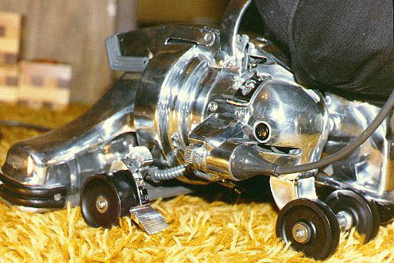
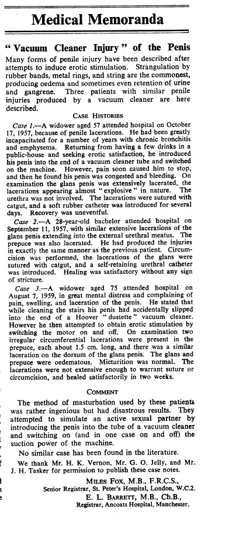

Kerby The Killer
Kerby the Killer Vacuum

Hi, my name is Josh, and this website is warning from the chrome beast who lives in my house. His name is Killer Kerby, and he is an ancient vacuum from the 1950's "Kirby" line of vacuum cleaners that was given to me to use in college shortly before my grandparents passed away. While Kerby is quite precious, I am sorry to say that his age has made a precious peice of junk.
He has cleaned my families house for decades, but after years of what my grandpa would call, "percussive maintenance" Kirby smokes and sputters like an elderly french prostitute.
He often sat inside my hall closet for days on end without any work, often reminding me of his presence with the dust bunny friends that i find littering my apartment.

Eventually I began to research how to fix him and, while looking up old manuals from the manufacturer, I stumbled upon some articles related to the Kirby vaccum line and a phrase medical science has described as "penile injury." My mother, laughing at this story, nicknamed him "Kerby the Killer."
I wish I had heeded my mother's cute name she gave Kerby because two years ago i decided to make an attempt at bringing him back to working order by fixing his motor. I left him plugged-in and turned his switch to the "off" position as per the insturctions from 1950. After taking off his outer housing, I began to unscrew his motor chasis when a fire exploded from his ancient motor battery. A series of mistakes, including lack of proper eye saftey, prompted my mtoher to buy fir insurance and left me an eyebrowless mongoloid (as depicted by my friends drawing).
Today, Kerby slumbers in my closet thirsting for flesh and pain with his taunting chrome finish and evil headlamp that burns with Satan's hellfire.
For anyone else who dares own another Kirby vacuum, please dispose and sell it. Many other lives do not have to be lost to this beast of burden.
If you have any questions for me email me at:
jkgraham@vt.edu
or tweet at:
@killerkerby to hear back from Kerby himself.